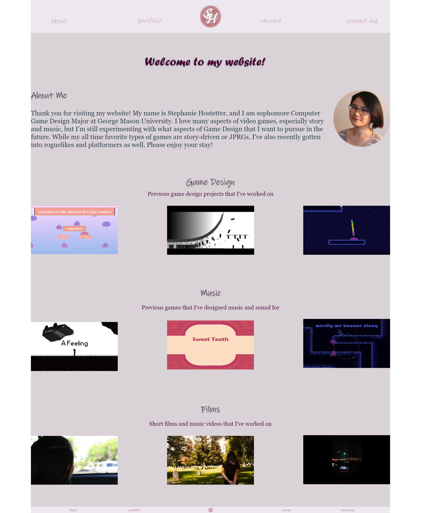
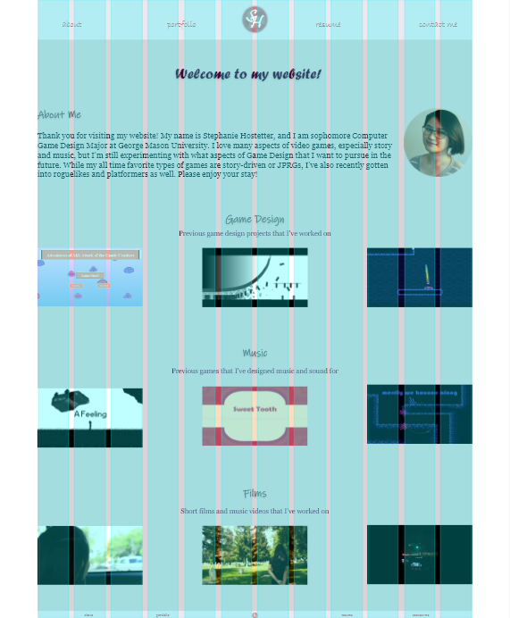
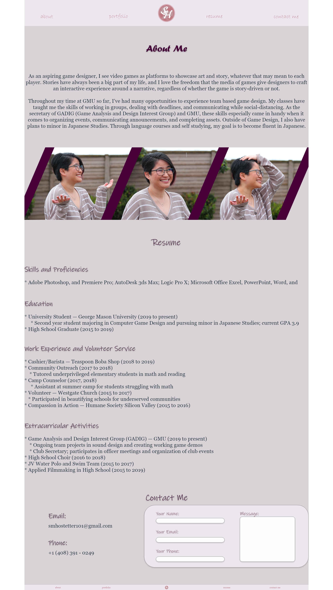
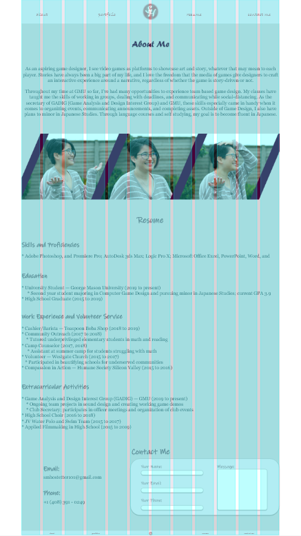
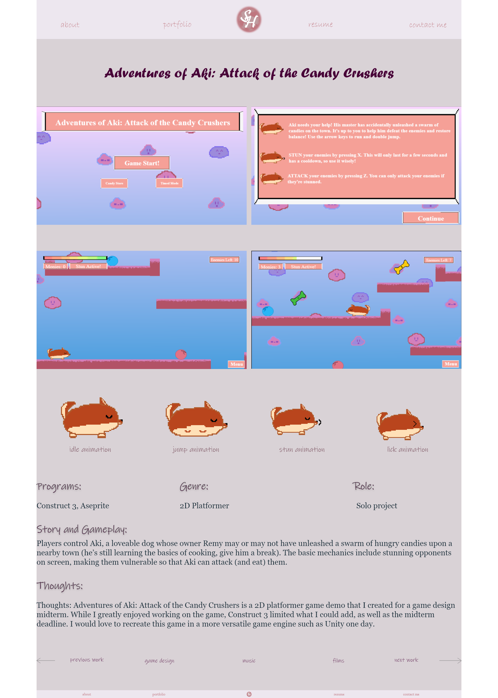
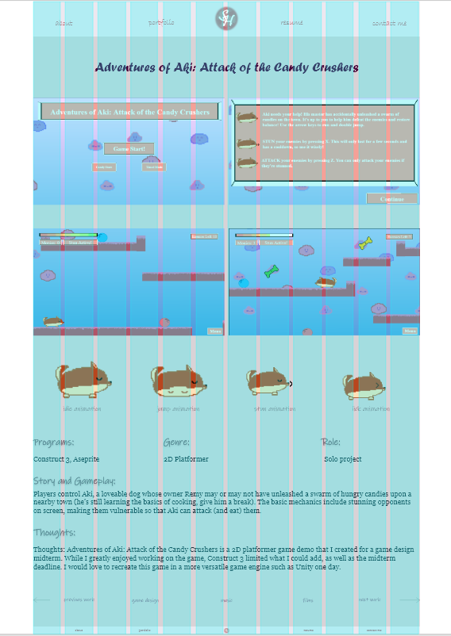
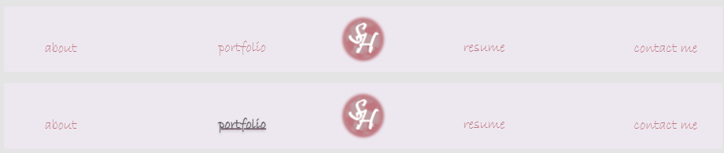

This is the final version of my mockup (coming from idea 2). I tried to apply as many things as I could from the critiques. Overall, the big changes were repositioning items so that the entire width of the wrapper was used, as well as making the paragraph text size bigger for readability. I also tried to be more consistent with spacing between elements.
I was finally able to upload the videos for my music! In general, I'm very happy with how the about me page turned out. I think that adding a outline/shadow to the headers also helped them pop out a bit. I'm not sure if I should keep the pieces as is or include a title underneath the pieces. I think I like the current version, but someone please let me know if you think titles underneath each piece might look better.
 I fixed the alignment and box color issues with the contact me box to make it cleaner. I think the contact me title is a bit close to the box, but I can clean that up in the html revisions. Because the paragraph text is now bigger, I'm worried that the resume is a bit too clumped now. I tried keeping it in two columns like before, but a lot of sections weren't able to all fit on the same line. I might mess around with the formating of this more for the final version.
 I cleaned up the layout and added a new image to the sample portfolio page. I also separated out the text into sections to make it more readable. Hopefully the visual hierarachy flows better this way.
 I wasn't entirely sure what to do for the hover design, but for now I made it so that the link will darken and underline when being hovered over. While it's not shown in the image, the portfolio link specifically in navigation will have a dropdown with the options "game design", "music", and "films" to click on. I will likely add something similar in the footer as well. By clicking on either of these 3 links, users will be taken to the first work in each category. Since I realized that a lot of specific game projects have overlapping work between design and music, I might also restructure how everything is categorized (i.e. by project name rather than by type of project).
